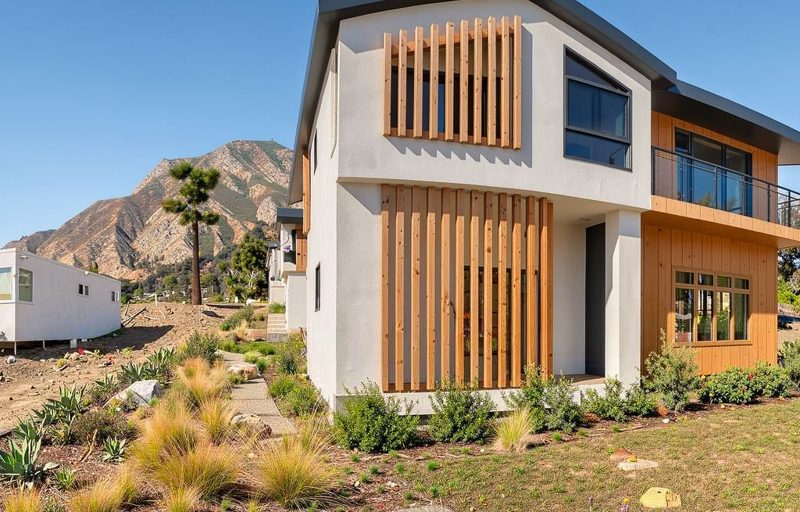
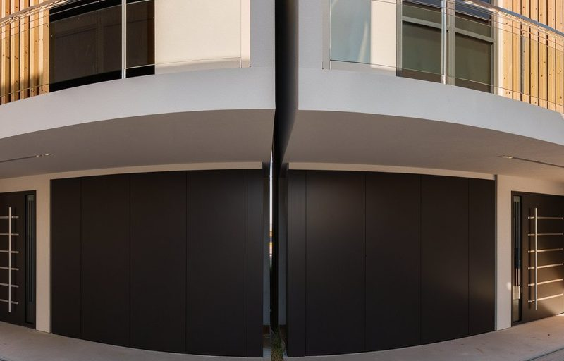

yds arch. · Altadena rebuilds
Step inside the projects
Put on the headset, pick a project and press Enter VR. Each walkthrough is built from the Revit model and rendered at the real site.

Mariposa Street
In the headset. Point at an orange ring on the floor and pull the trigger to walk there. Push the thumbstick forward to walk the way you are facing; left or right to turn.
Guided walk. Press it and the tour moves from spot to spot by itself. Good for a visitor who has never used VR.
On a tablet. Drag to look around, tap a ring to walk, tap the site plan to jump anywhere.